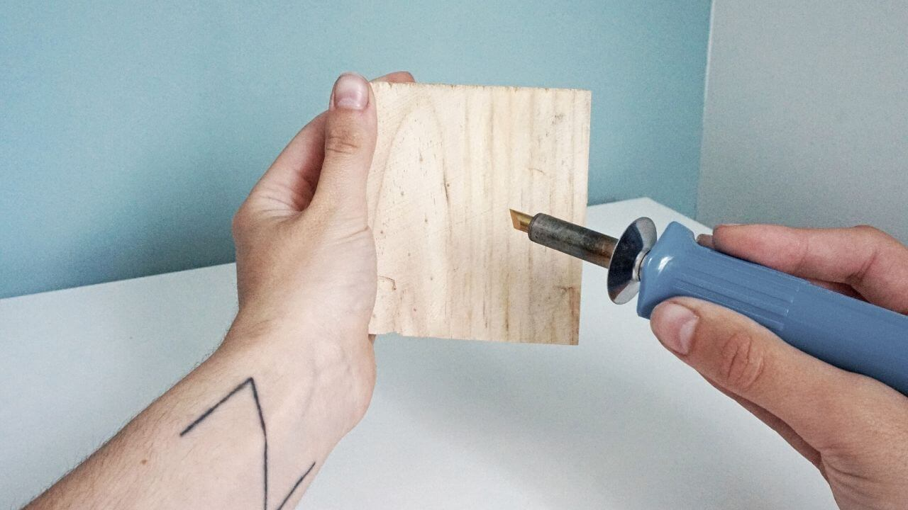

¡Hola!
Mi nombre es Lydia, y soy creadora de contenido en esta página web y en mi canal de YouTube con el mismo nombre.
Estudié el Grado de Historia en la UAH, Madrid, España. Y aunque adoro la historia, entendí que ese mundo no era para mí y comencé a estudiar lo que realmente me apasionaba, la decoración de interiores.
Soy técnico superior en decoración de interiores y programas 3D. He sido Visual Merchandiser en una reconocida tienda de decoración en España y he estado trabajando como Asesora de Iluminación en otra de bricolaje y decoración.
Mi última experiencia enriquecedora ha sido estudiar en la famosa Accademia Riaci en el centro de Firenze, Italia, bajo el profesorado del Prof. Bicci, diseñador líder de las tiendas de Salvatore Ferragamo en todo el mundo y diseñador referente activo del diseño italiano. Allí no solo aprendí técnicas diferentes a España en cuanto a decoración, también me especialicé en la decoración enfocada a la arquitectura de las estancias.
Te invito a cotillear mi web para encontrar inspiración, aprender de decoración fácil y sin tecnicismos o a colaborar conmigo para crecer juntos.

Manualidades
Aquí encontrarás infinidad de vídeos y entradas de manualidades, siempre intentando reciclar lo que ya tenemos en casa.
Diseño
En esta sección vamos a meternos de lleno en el mundo del diseño de interiores y os voy a aportar ideas y trucos que yo he aprendido en todo este tiempo.

Tienda
¡También tengo una tienda en etsy! Hago decoración a mano para poner más bonita tu casa.